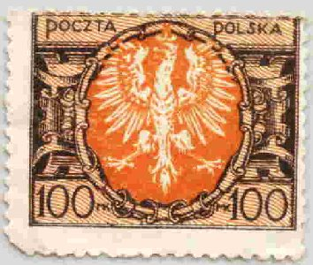

{kind=link}


Return To Catalogue - Poland overview - Poland 1919-1920
Note: on my website many of the
pictures can not be seen! They are of course present in the
catalogue;
contact me if you want to purchase the catalogue.
For Poland, previous issues, click here.
25 M violet and yellow 50 M red and yellow 100 M red and brown 200 M black and red 300 M green 400 M brown 500 M lilac 1000 M orange 2000 M blue 10000 M brown 20000 M olive 30000 M red 50000 M green 100000 M brown 200000 M blue 300000 M violet 500000 M brown 1000000 M red 2000000 M green
Value of the stamps |
|||
vc = very common c = common * = not so common ** = uncommon |
*** = very uncommon R = rare RR = very rare RRR = extremely rare |
||
| Value | Unused | Used | Remarks |
| 25 M | c | c | |
| 50 M | c | c | |
| 100 M | vc | vc | |
| 200 M | c | c | |
| 300 M | c | c | |
| 400 M | c | c | |
| 500 M | c | c | |
| 1000 M | c | c | |
| 2000 M | c | c | |
| 10000 M | * | * | |
| 20000 M | c | c | |
| 30000 M | * | c | |
| 50000 M | * | c | |
| 100000 M | * | c | |
| 200000 M | * | c | |
| 300000 M | * | * | |
| 500000 M | *** | ** | |
| 1000000 M | *** | *** | |
| 2000000 M | R | R | |
Surcharged

10000 (10 TYSIECY) on 25 M violet and yellow
Value of the stamps |
|||
vc = very common c = common * = not so common ** = uncommon |
*** = very uncommon R = rare RR = very rare RRR = extremely rare |
||
| Value | Unused | Used | Remarks |
| 10000 on 25 M | c | c | |
I have seen some 'SAMORZAD WARSZAWA' overprints. I'm not sure for which purpose this overprint was used.
A forgery exist of the 2000000 M value. A detailed description of this forgery is given in 'Focus on forgeries' of V.E.Tyler. It often has the a Poznan cancel. This forgery can be distinguished by the tongue of the eagle: in the forgery it is short and not attached to the head, in the genuine the tongue is long. The head is badly formed in the forgery (the beak can hardly be distinguished). The feathers of the genuine seem to be closer to the head of the eagle in the genuine stamp. The '000000' looks less regular than in the genuine stamps. A last difference that can can be mentioned is that the 'P' of 'POLSKA' in the forgery touches the frame below it, in the genuine stamp the 'P' doesn't touch the frame.

(forgery left, genuine right, reduced sizes)


1000 M blue (Copernicus) 3000 M brown (Conarski) 5000 M red (Copernicus)
These stamps have perforation 12 1/2.
Value of the stamps |
|||
vc = very common c = common * = not so common ** = uncommon |
*** = very uncommon R = rare RR = very rare RRR = extremely rare |
||
| Value | Unused | Used | Remarks |
| 1000 M | c | c | |
| 3000 M | c | c | |
| 5000 M | c | c | |

1 g brown 2 g brown 3 g orange 5 g olive 10 g green 15 g red 20 g blue 25 g brown 30 g violet 40 g blue 50 g lilac
Value of the stamps |
|||
vc = very common c = common * = not so common ** = uncommon |
*** = very uncommon R = rare RR = very rare RRR = extremely rare |
||
| Value | Unused | Used | Remarks |
| 1 g | c | c | |
| 2 g | c | c | |
| 3 g | c | c | |
| 5 g | c | c | |
| 10 g | * | vc | |
| 15 g | * | vc | |
| 20 g | * | c | |
| 25 g | * | c | |
| 30 g | * | c | |
| 40 g | * | c | |
| 50 g | * | c | |
In 1925 a set of similar stamps was issued, but with inscription 'NASKARB GR 50 GR; the values 1 g light brown, 2 g brown, 3 g orange, 5 g olive, 10 g blue, 15 g red, 20 g blue, 25 g brown, 40 g grey, 30 g violet and 50 g lilac were issued (value: all **). These stamps were sold with an additional 50 g value each for charity:
'NASKARB GR 50 GR' issue
1 Z red.
1 g brown (Ostra Brama church) 2 g green (statue of Sobieski on horse) 3 g blue (Royal palace with statue) 5 g green (townhall in Poznan) 10 g violet (design as 3 g) 15 g red (castle in Cracow) 20 g red (sailing ship) 24 g blue (design as 1 g) 30 g blue (design as 2 g) 45 g violet (design as 20 g)
40 g blue
20 g red 25 g light brown (1928)
20 g red
20 g red
10 + 5 g lilac and green underprint 20 + 5 g blue and yellow underprint
10 g green 25 g red 430 g blue

50 g green (Pilsudski) 50 g brown (***) 1 Z black (Moscickis) 1 Z brown (***)
These stamps with overprint 'DOPLATA' are postage due stamps.
A 1 Z blue with '1926. 3. VI. 1936' was issued in 1936.
25 g red.
15 g blue (this stamp has the same framework as the small arms design of 1929)
5 g violet 10 g green 25 g brown
These stamps are not to be confused with the small arms of 1932. The 1929 issue has ornaments at the whole length of both sides, while the 1932 issue has special ornaments in all four corners.
A postal forgery should exist of the 25 g value. I have never seen it.
25 g brown
5 g lilac 15 g blue 25 g brown 30 g red
A postal forgery should exist of the 25 g value, I have never seen it.
75 g red
30 g brown
5 g violet 10 g green 15 g red 20 g grey 25 g light brown 30 g red 60 g blue
These stamps are not to be confused with the small arms of 1929. The 1929 issue has ornaments at the whole lenght of both sides, while the 1932 issue has special ornaments in all four corners.
Surcharged '55 gr.' on 60 g blue (1934)
These stamps exist overprinted 'Wyst. Filat. 1934 Katowice' for a philatelic exhibition in Katowice: 20 g grey (red overprint), 30 g red.

'Wyst. Filat. 1934 Katowice' on 20 g grey (red overprint)
Overprinted 'Kopiec Marszalka Pilsudskiego' (blue) on 15 g red (1935)
Postal forgeries seem to exist of the 25 g and 30 g values (without watermark, the genuine stamps have watermark 'Posthorn').
60 g blue 60 g red (**, issued for the philatelic exhibition in Torun)
30 g green
This stamp was overprinted with 'Challenge 1934' (in red) in 1934.
80 g brown
Surcharged (1934): '25 gr. 25 gr.' on 80 g brown.
1.20 Z blue
Surcharged (1934): '1 Zl.' and two bars (all in red) on 1.20 Z blue.
30 g red
25 g blue 30 g brown
Overprinted 'Kopiec Marszalka Pilsudskiego' (red) on 25 g blue (1935).
5 g, 15 g, 25 g, 45 g, 1 Z (all in black).
5 g blue (rocks) 10 g green (lake) 15 g blue (ship) 20 g violet (mountain) 25 g blue (Belvedere in Warsaw) 30 g red (castle of Mir) 45 g red (castle of Porhorce) 50 g black (Cracow building) 55 g blue (library) 1 Z brown (church) 3 Z brown (president Moscicki)
Overprinted 'GORDON-BENNETT 30.VIII 1936': 30 g red (overprint in blue), 55 g blue (overprint in red).
1 Z blue
25 g green 55 g blue
Overprinted with '40 GR. 40 General Gouvernement' during the
German Occupation; two values were issued: 24 g on 25 g and 50 g
on 55 g.
15 g green 30 g red
Overprinted with '40 GR. 40 General Gouvernement' on 30 g, issued
during the German Occupation
1 Z blue
5 g orange 10 g green 15 g brown 20 g blue 25 g lilac 30 g red 45 g black 50 g lilac 55 g blue 75 g green 1 Z orange 2 Z red 3 Z blue
Overprinted 'General Gouvernement' during the German Occupation
The following values exist with this overprint: 2 g on 5 g orange 4 g on 5 g orange 6 g on 10 g green 8 g on 10 g green 10 g on 10 g green 12 g on 15 g brown 16 g on 15 g brown 24 g on 25 g lilac 30 g on 30 g red 50 g on 50 g lilac 60 g on 55 g blue 80 g on 75 g green 1 Z on 1 Z orange 2 Z on 2 Z red 3 Z on 3 Z blue
25 g violet
5 + 5 g orange 25 + 10 g violet 55 + 15 g blue
With overprint 'General Gouvernement' (1940)
45 g green 55 g blue
These stamps were issued in a minisheet of 4 stamps (two 45 g stamps on top and two 55 g stamps below) with text 'Ogolnopolska V Wystawa Filatelistyczna' on top and 'Warsawa 1938' below.
15 g brown 25 g violet 50 g red 55 g blue
15 g violet
6 g brown 8 g light brown 8 g grey (1941) 10 g green 12 g dark green 12 g violet (1941) 20 g dark brown 24 g red 30 g violet 30 g red (1941) 40 g black 48 g red-brown (1941) 50 g blue 60 g black 80 g dark violet 1 Z red 1 Z green (1941) Colour changed to black, with red cross overprint and surcharged in red (1940) 12 g + 8 g black and red 24 g + 16 g black and red 50 g + 50 g black and red 80 g + 80 g black and red
12 g + 38 g green (girl with ploughing man in background) 24 g + 26 g red (woman with scarf and houses in background) 30 g + 20 g violet (man with winter clothing and slegde in background) As 30 g + 20 g design, but with additional inscription 'WINTERHILFSWERK' 12 g + 8 g green 24 g + 16 g red 30 g + 30 g brown 50 g + 50 g blue
2 Z blue (inscription 'GENERALGOUVERNEMENT')
2 Z green (1943? inscription 'DEUTSCHES REICH GENERALGOUVERNEMENT')
4 Z green (inscription 'GENERALGOUVERNEMENT')
4 Z violet (1943? inscription 'DEUTSCHES REICH GENERALGOUVERNEMENT')
6 Z dark brown (1943? inscription 'DEUTSCHES REICH GENERALGOUVERNEMENT')
10 Z red and black (slightly larger size, inscription 'GENERALGOUVERNEMENT')
10 Z brown and black (1943?, size as 2 Z, inscription 'DEUTSCHES REICH GENERALGOUVERNEMENT')
10 Z + 10 Z red and black (1944, inscription 'GROSSDEUTSCHES REICH GENERALGOUVERNEMENT',
I've seen this stamp imperforate)
2 g grey 6 g light brown 8 g dark blue 10 g green 12 g violet 16 g orange 20 g dark olive 24 g red 30 g lilac 40 g blue 48 g brown 50 g blue (exists printed in two different printing processes) 60 g olive-green (exists printed in two different printing processes) 80 g violet (exists printed in two different printing processes) 1.00 Z green 1.20 Z black 1.60 Z dark blue
These stamps are usually perforated, but I have seen imperforate stamps.
With surcharge indicated (1942) 30 g + 1 Z red on yellow 50 g + 1 Z blue on yellow 1.20 Z + 1 Z brown on yellow
12 g + 8 g lilac 24 g + 6 g red 50 g + 50 g blue 1 Z + 1 Z green
12 g + 18 g violet (Veit Stoss, sculpturer) 24 g + 26 g red (Durer, painter) 30 g + 30 g lilac (Johann Schuch) 50 g + 50 g blue (Joseph Eisner) 1 Z + 1 Z green (Copernicus) Color changed and overprinted '24. MAI 1943' twice 1 Z + 1 Z red
12 g + 1 Z violet 24 g + 1 Z red 84 g + 1 Z green
12 g + 38 g green (Lublin) 24 g + 76 g red (Krakau) 30 g + 70 g violet (Radom) 50 g + 1 Z blue (Warsaw) 1 Z + 2 Z black (Lemberg)
12 g + 1 Z green 24 g + 1 Z red 84 g + 1 Z violet
12 g + 18 g green (Konrad Celtis) 24 g + 26 g red (Andreas Schluter) 30 g + 30 g lilac (Hans Boner) 50 g + 50 g blue (August der Starke) 1 Z + 1 Z brown (Georg Gottlieb Pusch)